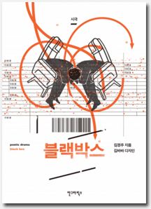

소개
전방위 시인 김경주와 그래픽 디자이너 김바바의 컬래버레이션
기내, 추락, 부조리를 넘나드는 이야기와 타이포그래피로서의 시(詩)시와 타이포그래피가 만드는 활자극장
이 이야기는 에그플랜드(Eggplant) 항공사의 비행기가 이륙한 뒤, 밤 11시부터 자정까지, 한 시간 동안 구름 속에 머문 사람들에게 일어난 이야기이다. 이륙과 동시에 조종실에서는 구름 속에서 하나의 불빛을 발견한다. 관제탑에서 보내는 신호로 생각한 기장은 그 불빛을 따라 구름 속으로 비행기를 옮긴다. 하지만 비행기는 아무도 본 적 없고, 아무도 볼 수 없는 기묘한 구름 속을 헤맬 뿐이다. 착륙할 곳을 찾지 못하고 비행기는 허공에서 한 시간 동안, 하지만 지상의 시간으로는 무려 이틀 동안 실종된 채 활공을 반복한다. 일종의 미아가 되어버린 비행기는 마치 구름의 꿈속에 들어온 것처럼, 이상한 새의 몸 안에 들어온 것처럼, 우리가 해독할 수 없는 시차(時差) 속에서 멀미를 한다. 우리가 한 번도 경험한 적 없는 허공과 언어의 한가운데 존재하는 기묘한 섬에 도착하듯 이야기의 시차는 천천히 깊어간다.
[블랙박스]는 김경주가 시인과 극작가로 활동하기 전부터 씌어져 지금까지 계속 다듬어져온 작품이다. 시극이라는 본래적 특성 때문에 [블랙박스]는 집필 단계에서부터 타이포그래피적 속성을 품고 있었다. “이 극에서 지문을 구름들이 대본 속으로 서서히 차오르는 느낌으로 표현되고 있다. 허공은 지문 속에서 지문 바깥으로 나오는 하나의 형(形)으로 우리가 해독하기 어려운 공간과 시간으로 흘러간다. ‘사이’와 ‘정적’의 질감도 나뉠 필요가 있는데, ‘사이’가 세밀한 곳에서 전체로 퍼지는 공기의 밀도를 가지고 있다면, ‘정적’은 전체에서 세밀한 곳으로 모아지는 공기의 질감이다.” 같은 김경주의 시적, 타이포그래피적 주문을 지면 위에 고스란히 구현할 수 있는 파트너를 찾기란 쉽지 않은 일이었을 테니까 말이다.
김경주가 홍대 앞에서 디자인 스튜디오 ‘장소 13(PL 13)’을 운영하는 그래픽 디자이너 김바바를 만난 뒤 [블랙박스]를 지면 위로 옮기는 일은 비로소 현실화될 수 있었다. [블랙박스]에서 카파와 미하일이 처한 부조리한 상황과 그들이 나누는 모순적인 대화처럼 [블랙박스]의 지면은 길거나 아주 짧은 ‘사이’와 ‘침묵’으로, 작품 속 등장인물의 내밀함을 시각적으로 드러낸 도형과 이미지로, 기내(機內)의 시차를 통과한다. 다시 말해 우리는 그래픽 디자이너 김바바가 구현한 타이포그래피로 김경주의 시적 이야기를 ‘본다.’ 그런 점에서 [블랙박스]는 또 다른 곳을 향하는 김경주의 작품의 시작이자 완성일지 모른다.
하지만 독자가 이 작품을 대하기 위해서는 작품 자체에, 그리고 스스로에게 너그러워져야 한다. 독자를 향해 김경주가 건넨 말처럼. “이해하려면 사랑에 빠지지 않을 수 없어.” 가가